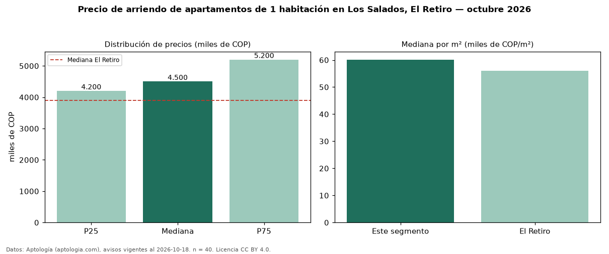

Precio de arriendo de apartamentos de 1 habitación en Los Salados, El Retiro — octubre 2026
En Los Salados, El Retiro, la mediana de canon mensual de apartamentos de 1 habitación es COP 4,50 millones, según 40 avisos vigentes. Eso es 15 % por encima de la mediana de El Retiro para apartamentos de 1 habitación (COP 3,90 millones). Por metro cuadrado, la mediana es COP 60.135/m² al mes (n = 40 avisos con área), 7 % por encima de El Retiro (COP 56.000/m²). Son 30 % de los 134 avisos de apartamentos en arriendo de la zona, cuya mediana general es COP 5,20 millones (−13 %). Con el precio por m² de venta del mismo segmento (COP 11,01 millones/m²), la rentabilidad bruta implícita es 6,6 % anual (aproximación con medianas de ofertas distintas). El área mediana anunciada es 73 m². El estrato más frecuente es 5 (88 % de los avisos con estrato). La mitad central de los avisos va de COP 4,20 millones a COP 5,20 millones (razón 1,2), una dispersión baja. Datos: Aptología (aptologia.com), CC BY 4.0 — https://www.aptologia.com/arriendo/el-retiro/los-salados. Archivos: PDF, CSV con las cifras y gráfica PNG.

| Avisos únicos | 40 |
|---|---|
| Percentil 25 | COP 4.200.000 |
| Mediana | COP 4.500.000 |
| Percentil 75 | COP 5.200.000 |
| Mediana por m² | COP 60.135 |
Fuente: avisos vigentes de portales inmobiliarios recopilados por Aptología, deduplicados (mínimo 30 avisos únicos por celda). Precios pedidos, no cerrados. Fecha: 2026-10-18.